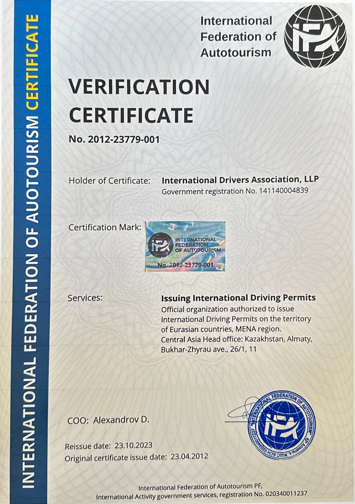

Документы и реестр
Сертификат IDA
ТОО «International Drivers Association» — единственная сертифицированная IFA организация. Согласно сертификату № 2012-23779-001, IDA уполномочена оформлять и выдавать международные водительские удостоверения на территории стран Евразии и региона MENA. Сертификат выдан 23 апреля 2012 года и переоформлен 23 октября 2023 года. Иных сертификатов IFA не выдавала.
Первичная выдача: 23 апреля 2012 года
Переоформление: 23 октября 2023 года

Осторожно, подделки
IFA подтверждает только сертификат № 2012-23779-001, выданный International Drivers Association. Сертификаты с иными номерами и ссылки на «Federation of International Autotourism» или похожие наименования к IFA отношения не имеют. Для проверки обратитесь в дирекцию Федерации.
directorate@ifa.org.kz